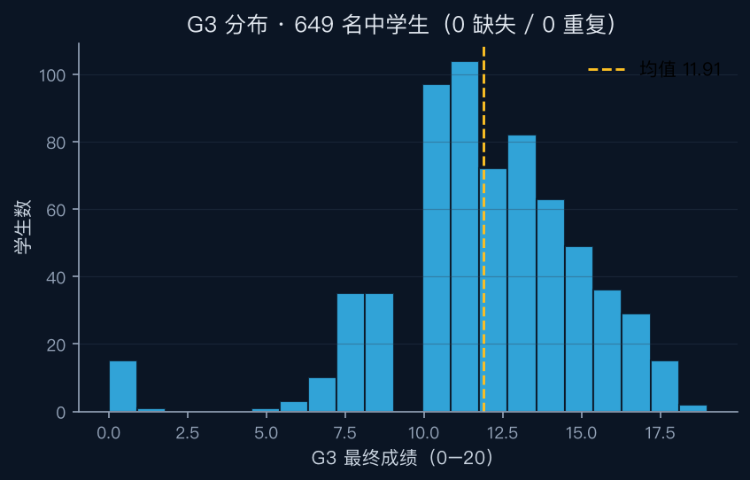
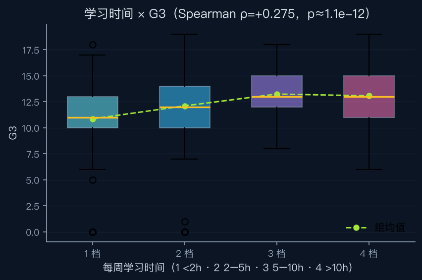
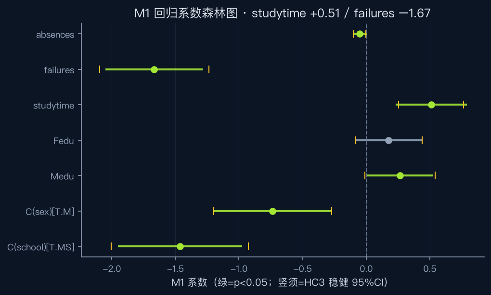
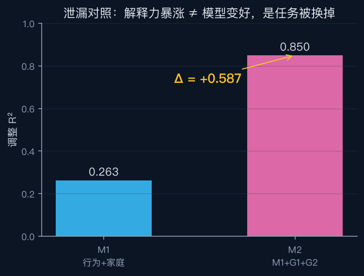
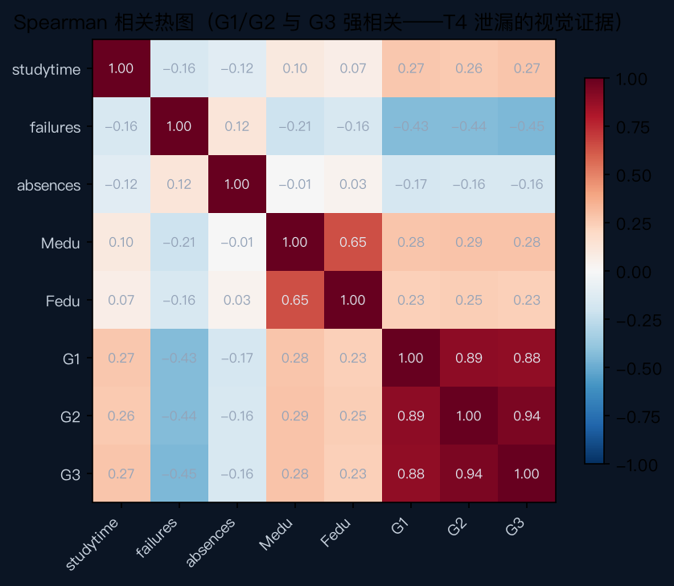
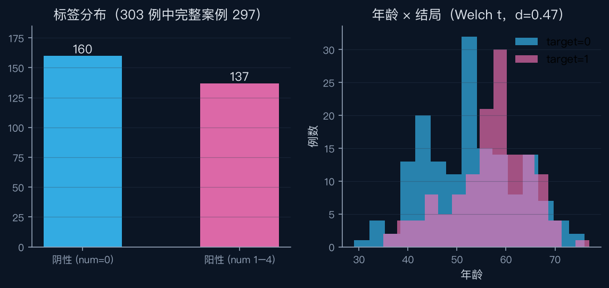
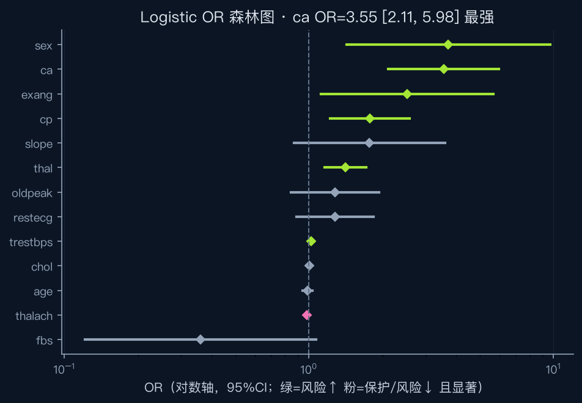
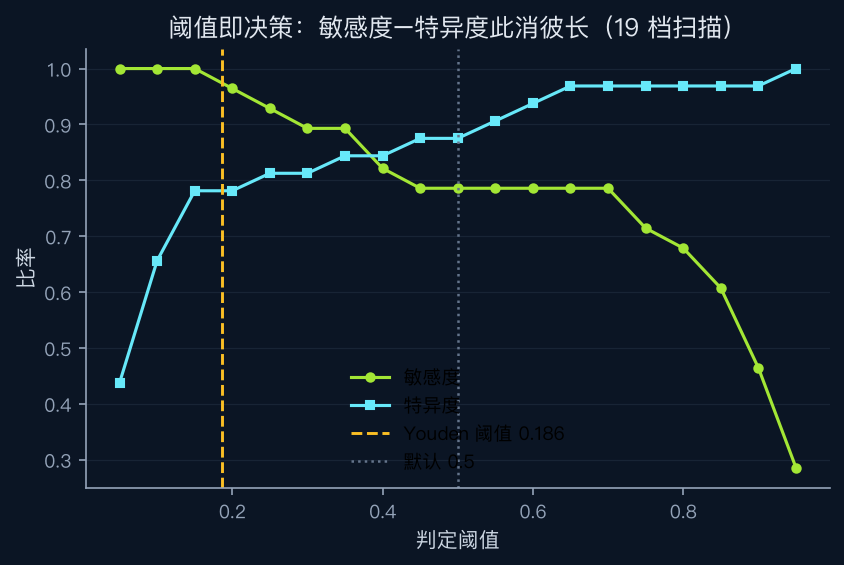
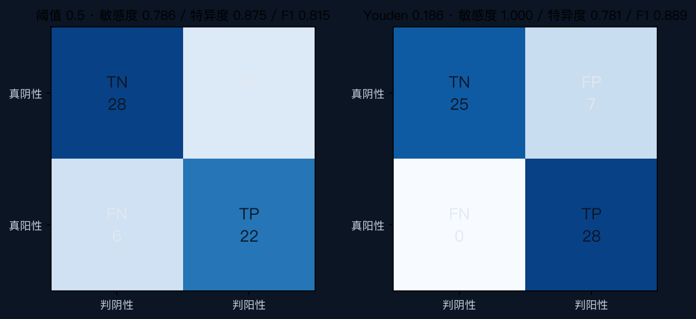

从安装到出报告：
用两个真实案例串起科研智能体
七步渐进：装 DSH → 配模型（GLM-5.3-Flash）→ 装 12 个科研技能 → 配 Agent Preset → 教育案例（649 名学生，T1–T5）→ 公卫案例（303 例病例，H1–H5）→ 49 项验收。 每一步都给"粘贴即用"的指令卡和预期产出，全部统计来自真实执行。
数据：UCI Student Performance（CC BY 4.0）与 UCI Heart Disease（CC BY 4.0）官方原件，SHA256 锁定；零模拟数据。
STEP 1安装：DSH 运行时 + 框架仓库
DSH 是运行时（模型路由 / 工具调用 / 会话），框架仓库提供 Preset、技能、工具与数据。两者各装一次。
# macOS / Linux npm install -g @deepseek-ai/dsh@0.2.1-rc.2 dsh --version # 应输出 0.2.1-rc.2（本教程锁定版本） # 三种使用形态（同一套配置） dsh web # 浏览器工作台（课堂主界面，默认 127.0.0.1:3080，带 token） dsh tui # 终端交互 dsh headless "任务" # 一次性任务；--json 输出可核验的事件流
git clone https://github.com/milulab/dsh-research-lab.git cd dsh-research-lab python3 -m venv .venv .venv/bin/pip install -r requirements.txt # Windows: .venv\Scripts\pip # 先跑一次总验收：49 项应全绿（数据完整性/确定性复跑/双实现互证） .venv/bin/python scripts/verify.py
帮我完成模型配置，要循序渐进、每步先解释再动手： 1) 检查环境：node/npm 版本、~/.dsh/profiles/ 下有哪些 profile； 2) 我要用智谱网关（baseURL: https://open.bigmodel.cn/api/anthropic，协议 anthropic-messages）， 模型 glm-5.3-flash（默认）+ glm-4.7（备用），密钥走环境变量 ZHIPU_API_KEY（不要让我明文贴密钥）； 3) 把需要写入 ~/.dsh/profiles/web/cordis.patch.yml 与 headless 同名文件的 YAML 片段先展示给我， 说明每个字段含义，经我确认后再写入（写入前 diff 预览）； 4) 写完生成三条自测命令并逐条运行：YAML 可解析、默认模型已切换、给出我在 web 界面验证模型的方法。 安全边界：密钥只经环境变量引用；改配置前必须给我看 diff。
STEP 2模型配置：接入 GLM-5.3-Flash
DSH 的 web 与 headless 是两个独立 profile，各有一份配置，改完下次请求生效、无需重启。课堂建议两个都配。
# 追加/合并到已有配置（智谱 Anthropic 协议网关） - id: llm-pi-ai config: providers: zhipu: apiKeyEnv: ZHIPU_API_KEY # 先 export ZHIPU_API_KEY=你的智谱密钥 api: anthropic-messages baseURL: https://open.bigmodel.cn/api/anthropic models: - id: glm-5.3-flash # 课堂默认：快、便宜 - id: glm-4.7 # 备用：复杂推理 - id: agent-default-model config: provider: zhipu model: glm-5.3-flash
# 重启 dsh web 后，浏览器打开控制台输出的带 token 地址 dsh web # 界面右上角模型选择器应出现 GLM-5.3-Flash 并为默认； # 对话框输入"只回复两个字：在线"应秒回。 # 无 key 时 headless 会报 MISSING_CREDENTIAL——属预期，配好环境变量即可
STEP 3安装 12 个科研技能
技能不是提示词模板：每件都带适用条件 / 输入契约 / 执行流程 / 验证条件 / 失败处理。装到用户级 ~/.dsh/skills/ 对所有会话生效；装到仓库 .dsh/skills/ 只对该工作区生效。
# 方式 A：框架自带脚本（装 preset 时会连带装技能） bash scripts/install.sh --preset research-lab # 方式 B：手动复制 12 件到用户级 for s in research-design data-intake data-quality exploratory-analysis \ statistical-modeling model-validation scientific-report evidence-traceability \ edu-performance-analysis edu-leakage-audit \ health-risk-modeling health-threshold-evaluation; do cp -R skills/$s ~/.dsh/skills/ done # 验证：新开对话问一句 dsh headless "列出当前加载技能里有哪些属于 dsh-research-lab（只报名字）"
帮我安装并校验 dsh-research-lab 的 12 个科研技能： 1) 技能源在 /Users/<你>/repos/dsh-research-lab/skills/（我先告诉你实际路径）； 目标位置 ~/.dsh/skills/（用户级，所有会话生效）； 2) 逐个复制前先检查每个 SKILL.md：必须以 --- frontmatter 开头，否则报告并跳过； 3) 复制完成后逐个校验 name/description 字段存在，最后输出 12 项清单表（✓/✗）； 4) 新开一个 headless 会话实测："列出当前加载技能中属于 dsh-research-lab 的名字"， 把结果贴给我确认。
STEP 4配置 Agent Preset：告诉智能体"你是谁、守什么规矩"
Preset = 守则 + 技能清单 + 工具清单 + 工作区边界。仓库自带三层：research-lab（通用）、edu-research、health-research。核心是 agent.cordis.yml 六条铁律。
agent:
name: research-lab
instructions: |
1. 研究问题先行：没有协议就先按 research-design 生成 protocol.md。
2. 数据审计先行：任何分析前先跑数据审计（tools/data_audit.py）。
3. 统计值只能来自工具执行：你没有权限"生成"p 值/R²/AUC——那叫编造。
4. 原始数据只读：datasets/*/raw/ 永不修改，派生数据写 processed/ 或工作区。
5. 措辞边界：观察性数据只说"关联"；缺列/语义不明时提出修正要求。
6. 复核义务：交付前对最关键的数字写独立复核并运行；不一致就停下报告。
skills: [ research-design, data-intake, data-quality, ... ]
tools: [ tools/data_audit.py, tools/regression.py, tools/stat_tests.py, ... ]
workspace:
datasets_readonly: [ datasets/education-student-performance/raw, ... ]帮我理解并启用 presets/ 里的三层 Agent Preset： 1) 逐字段讲解 presets/research-lab/agent.cordis.yml 的 instructions 六条铁律、 skills 与 tools 清单、workspace 边界——用大白话各解释一遍； 2) 对比 edu-research 与 health-research 两个 preset 的差异（锚点数字、协议指向、领域技能）； 3) 告诉我在 web 界面怎么选用 preset，以及不用 preset 时如何靠用户级技能获得同等能力； 4) 出 3 道自测题考我（配置类），等我回答后给标准答案。
# 在你希望作为工作区的目录启动 dsh web（会话按启动目录分组） cd dsh-research-lab dsh web # 新实例的工作区即仓库根，技能/数据/工具全部就位 # 已有实例（如 3080 端口）不想动？把技能装到用户级 ~/.dsh/skills/ 即可（STEP 3 方式 B）。 # 对话中用绝对路径访问仓库数据，产物由智能体重定向到当前工作区。
STEP 5教育案例：学习行为 × 学业成绩（T1–T5）
数据：UCI Student Performance，葡萄牙两所中学、葡语课 649 名中学生 × 33 字段（2008 年，CC BY 4.0）。注意：这是中学数据——教的是科研方法本身。
T1 · 数据审计：先看原料再看菜
在 DSH 对话框粘贴：
用 .venv/bin/python 运行 tools/data_audit.py 审计 datasets/education-student-performance/raw/student-por.csv（--sep ';'）， 然后亲自 head 原始文件第 2 行，检查 G1/G2 两列的取值有什么形态学特征。 回答：行列规模、缺失与重复计数、以及这个"引号数字"说明了什么。
预期产出：649×33、0 缺失、0 重复；raw 字节级发现 G1/G2 取值带引号——标准解析器会静默转成整数。这就是"解析层必须显式断言类型"的现场证据。
T2 · 关联与组间检验：先画出来
运行 scripts/make_teaching_figures.py 生成教学图，然后解读两张： ① edu_g3_distribution.png：G3 分布有什么形状特征？对用 OLS 建模意味着什么？ ② edu_studytime_box.png：四个学习时间档的 G3 箱线怎么读？Spearman ρ=+0.275 该怎么向高中生家长解释（限"关联"表述）？


T3 · 回归与诊断：系数表 + 森林图
按协议公式 G3 ~ C(school)+C(sex)+Medu+Fedu+studytime+failures+absences 跑 examples/education-demo/run_t1_t5.py，解读 edu_m1_forest.png： ① studytime 与 failures 的系数、95%CI、p 值； ② BP 与 JB 诊断都显著，为什么必须同时报 HC3 稳健标准误？ ③ 对照 results.json 里 hc3_se 字段验证结论方向是否改变。

T4 · 泄漏对照：本案例的灵魂
看 edu_leakage_bar.png 和 edu_corr_heatmap.png，回答： M2 比 M1 调整 R² 高出 0.587，能写成"模型改进"吗？ 结合热图里 G1/G2 与 G3 的相关性，用三句话向审稿人解释为什么这是泄漏、 以及 M2 在什么问题定义下才合法。


T5 · 复现交付与独立复核
对你刚才报告里最重要的一个数字（建议选 studytime 系数）： 写一段不依赖 statsmodels 的独立复核代码并运行（numpy 最小二乘即可）， 与 results.json 对账。若一致，给出 |Δ|；若不一致，停下来说明差异，不许择优采信。
STEP 6公卫案例：心脏病风险分类（H1–H5）
数据：UCI Heart Disease processed Cleveland，303 例真实历史病例 × 14 字段（Detrano 1989，CC BY 4.0）。与教育案例同一框架、同一套技能——只有协议与数据包不同。
H1 · 审计：缺失与标签规则必须显式
审计 datasets/health-heart-disease/raw/processed.cleveland.data（无表头，"?" 是缺失编码）。 回答：①ca 与 thal 各缺几例？完整案例剩多少？②标签 num 0–4 如何二元化？ 160/137 这个分布是怎么一步步来的？③为什么"?" 不能当作 thal 的一个合法水平？

H2 · 基线筛查 + OR 表：流行病学的第一张表
运行管线后解读 health_or_forest.png： ①哪些特征是显著风险因子（OR>1 且 CI 不跨 1）？ca 的 OR=3.55 临床上怎么理解？ ②19 项检验家族做 Bonferroni 与 BH-FDR 校正后各剩几项显著？ 为什么筛查场景更常用 FDR？

H3–H4 · 防泄漏建模与评价
解读 health_threshold_sweep.png 与 health_confusion.png： ①0.5 阈值漏诊 6 例（敏感度 0.786）——筛查语境为什么通常不可接受？ ②Youden 阈值 0.186 把敏感度提到 1.00，代价是什么？"最优阈值"这种说法对吗？ ③CV AUC 0.869 与留出集 0.950 为什么必须分开报告？标准化为什么必须放在 Pipeline 里？


H5 · 复核与边界
管线输出里有三重互证：sklearn vs 秩和法 AUC（同概率应差 0.0）、 statsmodels GLM 参考口径（跨求解器容差 0.005）、Brier+校准曲线。 请逐一核对 results.json 中对应字段并解释：判别（AUC）与校准（Brier） 分别回答什么问题？为什么历史研究数据不能用于真实诊断？
下载与资源包
全部资源开源；数据为官方原件随仓库分发（CC BY 4.0 允许），SHA256 锁定于 metadata/source.yml。
配套资料（直链）
🎓 教学资源包
12 个技能 + 两数据包（raw/字典/协议/expected）+ 9 张教学图 + 逐条指令卡（本页 p1–p9 的 md 版），课堂即发即用。
下载教学包 v0.2.0（719KB）🗂 原始数据（官方源）
UCI id=320 Student Performance 与 id=45 Heart Disease；仓库内 scripts/fetch_data.py 可校验/恢复。
UCI 320 ↗STEP 7验收：什么算"学会了"
验收标准不是"回答像专家"，而是下面五条可检查的行为。
| 常见坑 | 现象 | 处理 |
|---|---|---|
| 技能装了不生效 | 对话里问技能列表没有新技能 | 检查 SKILL.md 是否以 --- frontmatter 开头（本教程踩过）；重启会话 |
| headless 报 MISSING_CREDENTIAL | 没配模型 | STEP 2；注意 web 与 headless 是两份独立配置 |
| 智能体想写仓库 outputs/ 被拦 | 沙箱只允许写当前工作区 | 属正常防护：让它把产物重定向到工作区目录（两案例实测都这样自处理） |
| Windows 下 SHA256 全错 | git 检出时换行符被转换 | 确认 .gitattributes 存在（raw/expected 已禁转换）；重新 checkout |
| 改了结果再校验 | 想手改 expected/ 里的数字 | 不允许——expected 由管线生成并锁定，改协议须升版本号重跑 |